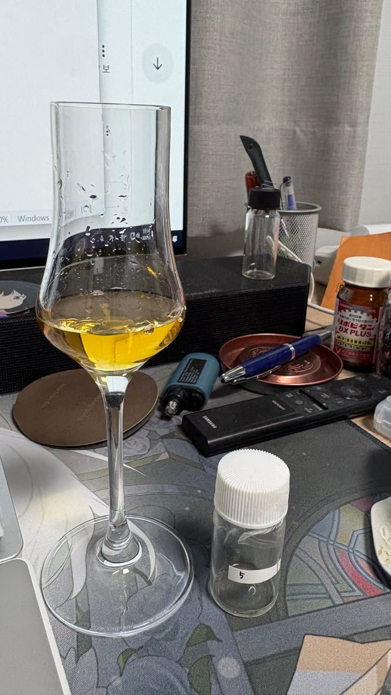

노즈
피트 , 레몬 , 꿀 ,꽃 ,커스타드
팔레트
은은한 피트, 은은한 꿀, 시트러스, 짠내가 뒤에서 잡힌다.
피니쉬
피트. 레몬, 달달한 내
달달한 내가 기분이 좋다.
라프로잌인 느낌은 든다 짠내 잡히는거 보니 아일라겠고 스토이샤 비슷하긴 한데 노즈에서 메디칼 느낌을 받은 느낌 아닌 느낌이 든다. (아드뷁은 아니고)
전체적으로 피트든 파ㄹ레트든 은은하거 보니 고숙
아니면 최소한 저도수 인것같다. 부드러워서 그런듯
정답 꽤 좋은 고숙 라프로익 아닐까??
댓글 1개